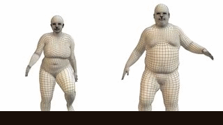

Without discovery and exploration what defines humanity?
Humanity is approaching a very interesting transition point. Soon it will no longer be the sole form of intelligence leading exploration and scientific discovery. Slowly becoming more inefficient and clumsy than its new counter parts that its participation in the process will not be required. Humanity's contributions will be trivial and it will simply become a spectator of the technology it can't even claim to have created. Will these new technological entities feel empathy toward humanity because it enabled their existence sometime in the distant past? Or will they feel their existence would have naturally occurred anyway.
Ehh, let's focus on aimlessly pushing forward and let humans ponder their inadequacies.
